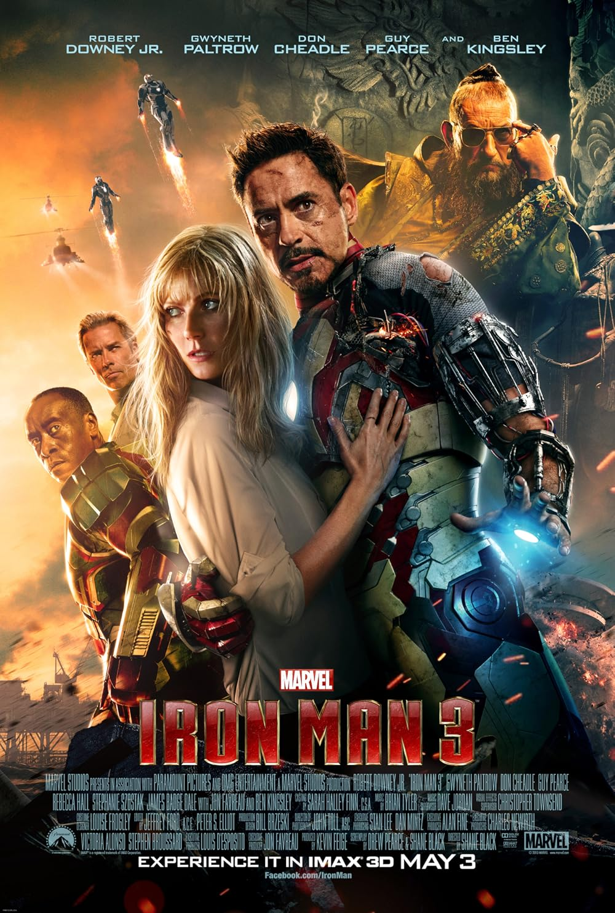
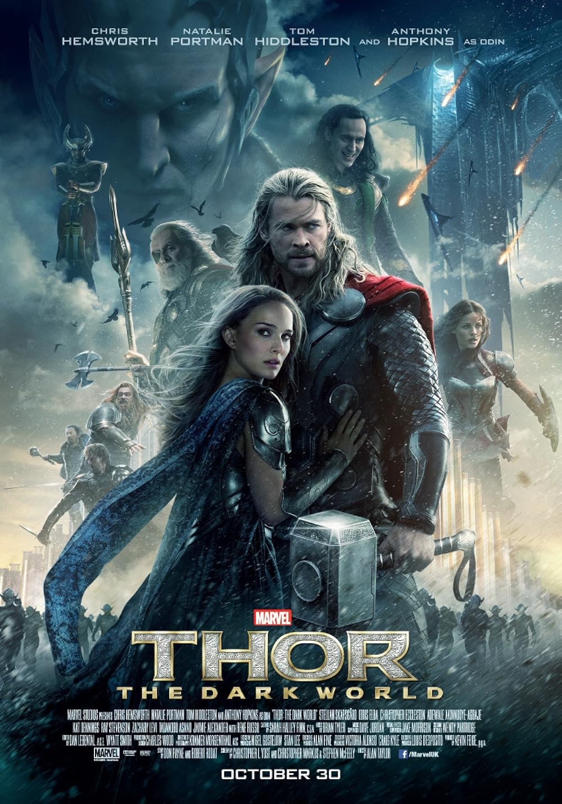
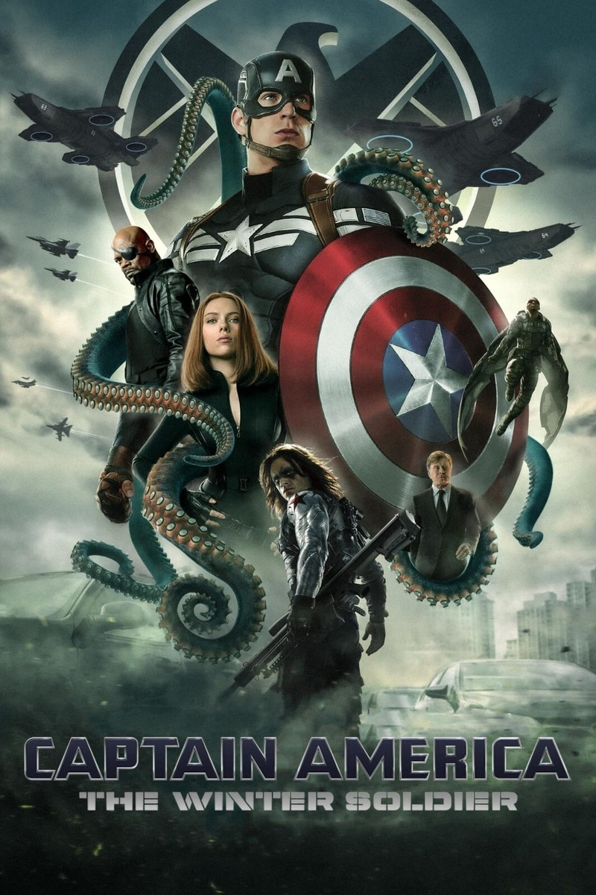
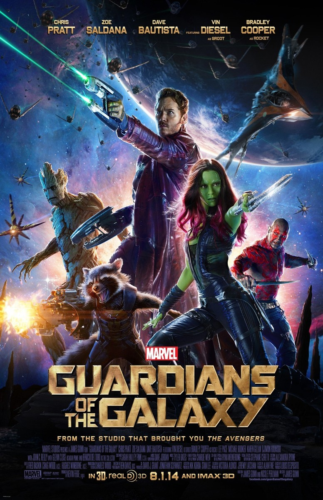
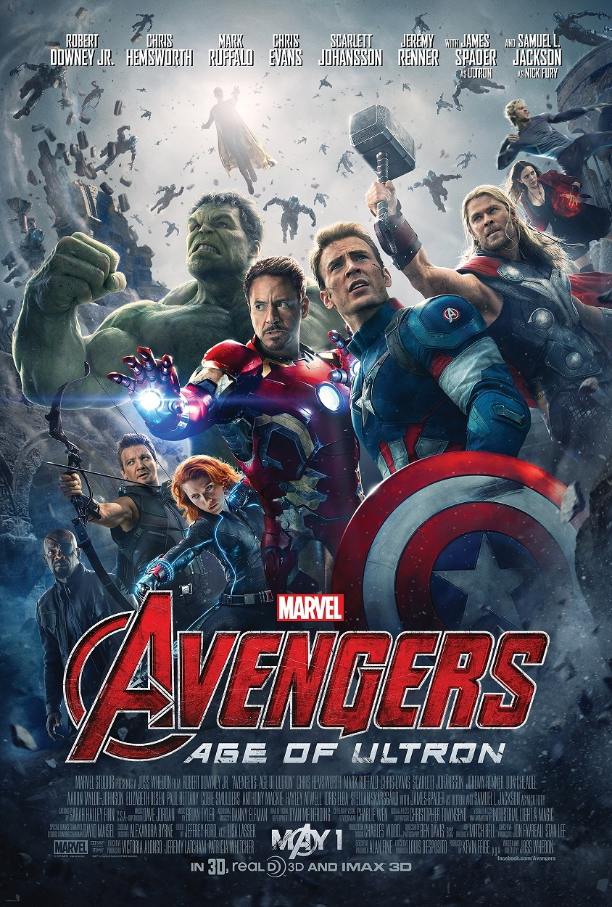
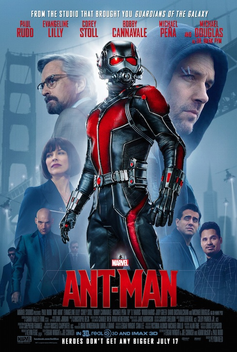

Iron Man 3 (2013)
Tony Stark struggles with the events of The Avengers while facing a mysterious new enemy.
Phase Two takes place from 2013 to 2015 and expands the MCU by introducing new characters, locations, and threats. The Avengers face new challenges while the Infinity Saga continues to develop.

Tony Stark struggles with the events of The Avengers while facing a mysterious new enemy.

Thor fights to protect the Nine Realms from a powerful ancient threat.

Steve Rogers discovers a conspiracy within S.H.I.E.L.D. and confronts a mysterious assassin.

A group of unlikely heroes joins forces to protect a powerful mysterious artifact.

The Avengers must stop Ultron, an artificial intelligence that threatens humanity.

Scott Lang becomes Ant-Man and learns to use technology that allows him to shrink in size.
Phase Two expands the MCU beyond the original Avengers by introducing the Guardians of the Galaxy, Ant-Man, and important developments involving the Infinity Stones.
Continue to Phase Three